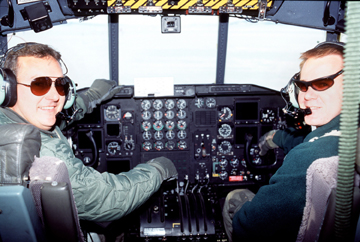
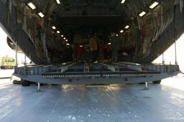
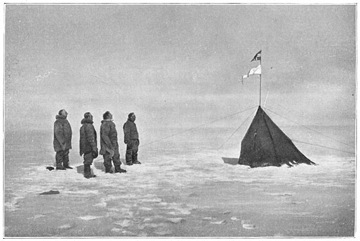
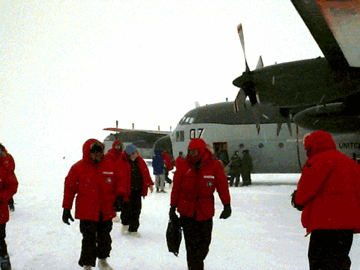
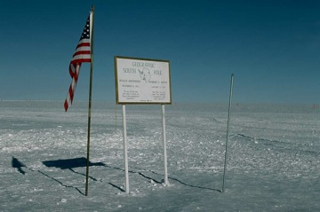
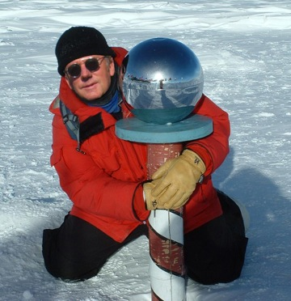

Going South...
So, there I was recently with nothing much to do. The holiday season was over, and the future was looking kind of bleak. It was a few days before the inauguration, but everyone said it'll get a lot worse before a turnaround anytime soon. That the economy is tanking - a word ill-used and hardly held in grand respect in our particular household - and that pessimism reigns. They said that things were "going south."
Now I know that that term is used mainly in the business world. Random House Dictionaries say their first known example of the term was from Business Week in September 1974, a slang usage for a deal that went bad or not as expected. It also gained notoriety in the early 1990s in technical fields such as computing, which needed as many terms for equipment and software failure as it could find. Going south described it perfectly.
When times are good, artists and writers, like myself, get the support they need, enriching the quality of life in unquantifiable ways. But when the economy and times goes south or the rich lose interest, artists are among the first to suffer. So I thought it would be a good time for me to think about going south as well.
Seeing that Santa Claus rules the northerly domain of this world, I decided to head to the extreme south, the South Pole, to see who or what rules that particular dominion. Going so
uth to the max.
Luckily, I made a few calls, and just hours later I found myself hitching a ride with some old school pals on a LC-130 Hercules special ski-equipped aircraft operated by the U.S. Antarctic Program. These guys fly its resupply missions ("Operation Deep Freeze") out of McMurdo Station, 2200 miles due south of New Zealand, and I was lucky enough to catch one run without much delay.

Commanding the flight was Cmdr. Flt. Spc. Joe King, from Asheville, NC, and his co-pilot was Ltn. Col. Al Donneau, from What Cheer, IA. These were my classmates from college, and they are still right friendly guys. "Sure, y'all come on aboard, and have the thrill of your life... if you like cold. But this is the perfect summer time to visit, what with the full moon being 14% larger and 30% brighter than normal, the largest and best of all 2009. Think you'll have a great time."

Flying in this behemoth was like transporting a large locker-room or many big storage bins in the yaws of a great big-box storage container. But these guys knew their stuff, and pretty soon the whole world out the windows was just one big white nothingness. The moon was of no help at all, seeing that the sun never sets down there for, like, 6 or 7 months straight. And then we took a small nose dive, circled a bit to the port, and dropped down on the airstrip at the Amundsen-Scott South Pole Station.

A little history. The first humans to reach the Geographic South Pole were Norwegian Roald Amundsen and his party on December 14, 1911. Amundsen named his camp Polheim, meaning "Home of the Pole". Amundsen's competitor Robert Falcon Scott, a British Royal Naval officer, with four other men from the Terra Nova Expedition, reached the Pole a month later, on January 17, 1912. On their return trip, Scott and his four companions all died due to a combination of exhaustion, hunger and extreme cold.
It wasn't until October 31, 1956 that men once again set foot at the Pole, when a party led by Admiral George J. Dufek of the U.S. Navy landed there in an R4D-5L Skytrain (C-47 Skytrain) aircraft. The U.S. Amundsen-Scott South Pole Station, which is 850 miles south of McMurdo Station, was established by air over 1956-1957 for the International Geophysical Year, and has been continuously staffed since then by scientific research and support personnel.
As with all structures at the South Pole, the original station caused wind-blown snow to build up in the surrounding area. This snow accumulation resulted in the structure being buried by about four feet of snow per year. The station, abandoned since 1975, is now deeply buried, and the pressure has caused the mostly wooden roof to cave in. The site is=2
0therefore a hazardous area and off limits to all visitors.
The station was relocated closer to the actual pole and rebuilt in 1975 as a geodesic dome, the most famous South Pole landmark. But after about 24 years, the snow drifts again caused this station to become impractical to maintain, so construction of a new station, adjacent to the Dome, began in 1999. Features of the new station included a modular design, to accommodate an increasing station population, and an adjustable, jackable elevation, in order to prevent the station from being buried in snow. The building faces into the wind with a sloping lower wall, which increases the speed of the wind as it passes underneath, causing the snow to be scoured away and keeping the building from being quickly buried.
The station sits atop a featureless, windswept, icy plateau at an altitude of 9,306 feet, about 800 miles from the nearest sea at McMurdo Sound. The ice is estimated to be about 9,000 feet thick there - about a mile and three-quarters deep - so the land surface under the ice sheet is actually near sea level.
Because the South Pole is a high altitude site, the sunlight is very intense. And, in addition, you have lots of reflected light from all the snow. You can't go outside at all without uv-blocking sunglasses. In fact, there is a substantial risk of snow blindness, where you literally sunburn your eyes; it can get quite serious and painful.

After a long, gliding landing, we put on our supplied extreme-weather gear and left the aircraft. The off-loading of the plane would take about two hours total. In order to prevent lubricating oil, hydraulic fluids and fuel from freezing, the engines are kept running while the plane is on the ground, causing quite a noisable ruckus. But these two hours would provide me with enough time to check things out.
All I really wanted to do was use the john, first, and then go visit the actual pole, if there was one. In midsummer, as the sun reaches its maximum elevation of about 23.5 degrees, temperatures at the South Pole average around12 °F. However, when I arrived, it was -81°F. My first mission was accomplished therefore indoors - no outside peeage - and then next I wanted to head out to find the pole.

The true Geographic South Pole is marked by a small sign and a stake in the ice pack. It's really not that big of a deal. A sign records the respective dates that Roald Amundsen and Robert F. Scott reached the Pole followed by a short quotation from each man and gives the elevation. These are repositioned each New Year's Day to compensate for the movement of the ice, about 33 feet each year. And that's it.
However, the Ceremonial South Pole is an area set aside for photo opport
unities at the South Pole Station. It is located a short distance from the Geographic South Pole, and consists of a metallic sphere on a plinth, surrounded by the flags of the original 12 Antarctic Treaty signatory states. This ceremonial marker is moved every two to three years to keep the walking distance to the Geographical South Pole minimal.
And boy was I glad the trek was kept to the minimum. With the windchill factor at -111°F, it wasn't long before I was feeling the chill. And the hike was only about three blocks from the station building. Luckily, one of the stationed engineers volunteered to escort me - thanks Geoff Stone from Lapidus, RI - and we actually got to the perfect bottom of the world in about 15 minutes. I huddled down next to the ceremonial plinth, smiled my freeze-cracking face as best I could, and got the best photo souvenir one could hope for. Talk about going south!

Then we hi-tailed it back to the station. We probably looked like a couple of half-loping buffoons on this brittle, frozen landscape, but I needed some warmth and I needed it now. I finally thawed out and fortunately was able to catch up on my emails while waiting on my return flight. I found out it was in the mid-80s back in Venice. Record-breaking summertime temps in mid-January! Boy, I thought, you don't know how lucky you are to live in the lap of winter paradise like you do. Up there basking away while I was down south, trying to at least keep my breath from freezing. Next I killed time in the station's updated recreation center, right down from the modular laundry and mess hall. I was just into my second song attempt at Guitar Hero II - yes, they have all the luxuries down there as well - when Joe King came along and said we're ready to depart, y'all.
I bid farewell to my down-south brethren, crisply walked over the crunchy snow and once again boarded the cargo plane, this time filled up with mainly waste and recyclables from the station and surrounding support buildings. I once again took my less-than-luxurious seat, like the kind you see in parachuting planes, and settled in for the return flight.
You know, after really going south, being at the actual bottom of the world, the inevitable return north brought a whole new light on the world, my work situation, and the future of our country that lies ahead for us all. I was feeling the remarkable surge of hope in an otherwise downbeat, if not depressing, period. And I was thinking about, once again, the obverse of this whole going south thing. I was 'going north,' like the terminology from the previously mentioned business world example. And things were looking 'up.'
Was my optimism actually based on graphical images? Think of sales charts that show best results as a line going upwards, using the convention that regards height as good and depth as bad. Then combine that with maps, which by convention have north at the top. And you've got me headed north, to Venice, to the new, great changes in store for us all. Onward and upward!
|